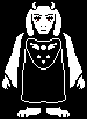
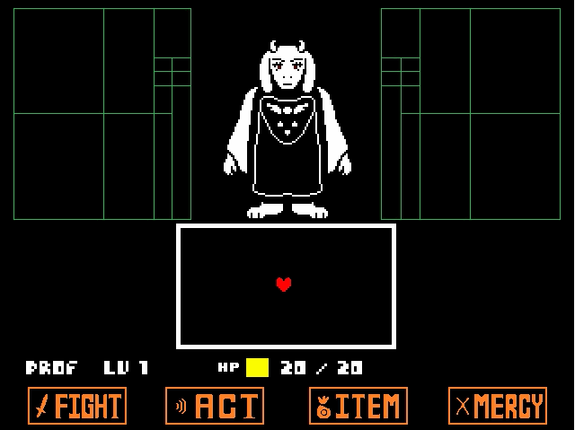

HOME/ |
FRISK/ |
BOSSES/ |
AÇÕES/ |
CRIADOR |

TORIEL
Toriel é a guardiã das Ruínas e a primeira grande personagem que Frisk encontra em Undertale. Gentil e protetora, ela cuida da criança e tenta impedir que ela deixe as Ruínas, acreditando que o mundo exterior é perigoso.
TEMA DA BATALHA
VOLTAR


História detalhada
Toriel era a rainha do Subsolo ao lado de Asgore Dreemurr. Eles viviam felizes com seus filhos, Asriel Dreemurr e o humano adotado Chara.
Após a morte de Chara e Asriel, Asgore, consumido pela tristeza, declarou guerra contra os humanos e prometeu coletar sete almas humanas para quebrar a barreira que prendia os monstros no Subsolo. Toriel discordou completamente dessa decisão, pois acreditava que matar crianças inocentes nunca resolveria o sofrimento de seu povo.
Por causa dessa divergência, Toriel abandonou o castelo e foi morar sozinha nas Ruínas, onde passou a cuidar dos monstros que viviam ali e proteger qualquer humano que caísse no Subsolo. Ao longo dos anos, ela viu vários humanos tentarem sair das Ruínas para enfrentar os perigos adiante. Todos acabaram morrendo pelas mãos de Asgore. Isso fez Toriel se tornar extremamente protetora.
Quando Frisk chega ao Subsolo, Toriel a encontra, ensina como funcionam os quebra-cabeças e o sistema de combate, oferece comida e um quarto para descansar e tenta convencer a criança a permanecer nas Ruínas para viver em segurança.
No entanto, Frisk decide continuar sua jornada. Toriel tenta impedir a saída, iniciando uma batalha. Durante o combate, ela nunca luta com força total e, se o jogador insistir em poupá-la, percebe que Frisk está determinada a seguir em frente. Ela então aceita a decisão, dá um abraço na criança e pede que ela cuide de si.
Dependendo da rota escolhida pelo jogador, Toriel pode reencontrar Asgore e os outros monstros. Na Rota Pacifista Verdadeira, ela perdoa Asgore, ajuda a enfrentar a ameaça final e, após a destruição da barreira, volta à superfície com todos os monstros. Lá, passa a viver em paz, ensinando crianças e reconstruindo sua vida.
Toriel é conhecida por sua personalidade gentil, paciente e materna. Apesar de evitar violência sempre que possível, ela é uma poderosa usuária de magia de fogo e demonstra grande coragem quando precisa proteger aqueles que ama. Sua história representa temas como perdão, proteção e a dificuldade de deixar alguém seguir seu próprio caminho.